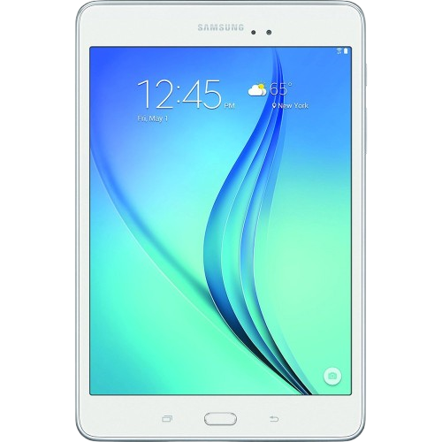

Gemdation, the Destroyer
September 26, 2026
If you've read the Debit Where Its Due, you'd know that I like to destroy stuff. But what you don't know is what I've broken. Be it on purpose or not.
This article is gonna expose me a lot. Fear me, electronics!
Tablet era
I will now go back in the good old days when I all did was go to elementary school and watch YouTube gameplay videos.

So I had this white Samsung tablet that I used to watch Minecraft YouTube videos with. One day it was buffering a lot and I was getting pretty tired of that. What I remember was that I hit it screen-first against a night stand, and then a huge crack popped on the screen, and I realized what I just did.
I don't remember what tablet I got next but I remember telling my mom that it just fell off my bed.
There was this grey iPad that I only remember using the Photobooth app on and later something bad that happened to it that I can't remember. What I can remember is that it was cracked and I could 'peel' the glass off the screen.
At some point during the peeling, it started to smoke. At that point I was near a back door and I tossed it out of my house.
Honorable mentions include an HP laptop that had a red cover, at some point it stopped turning on and I could see that the display had warping on it. And the other mention goes to a Samsung phone that had square-ish borders, it wasn't broken but I believe I left it at an intercity bus station. I have to assume it is in a landfill now.
There were a bunch of smartphones and other tablets that did not survive me but I can't say anything else since I hardly remember. Now time for the next era!
Mac and iPad combo
2020-2021, my best era ever! So one of my brother's friends wanted me to fix this old MacBook, and guess what I did?
No, I didn't break it, at least not yet, I only locked myself out of it. And it was the worst kind, a kernel lock, that I added myself. A good thing is that it was just a simple interface that wouldn't penalize you for multiple wrong attempts, but I couldn't remember what I set the password as for the life of me.
So it just sat there in my closet, until one fateful day. This interlaps with another device so let's roll into the pink iPad.
This was actually my mom's tablet that I used all the time, basically mine, if I'm being honest. And at some point I opened the MacBook's back with my tiny screwdriver and took both RAM sticks and hard drive out. I actually used kept that HDD up until early 2025 when it stopped working.
As for the RAM sticks, they did not get the mercy of being used again. I took my hammer and went to town. Fun Fact #1: I was in an apartment at this time, and someone who lived by me yelled "SHUT UP!" because I was being so loud. Looking back, that was hilarious but I was really freaked out at the time.
Now back at a later time to the iPad, I had the MacBook still opened and kept hammering until it bounced a certain way, and...
It got a crack at the top bezel, I remember I was so devastated because this was the device that I broke some other devices for. And I had a big Apple Music lofi playlist and everything. I could absolutely still use it since it was just the glass, but I really don't like a cracked screen, if it is something like the back glass then maybe. I guess I'm worried about cuts or something.
I ended up going back to my Galaxy J2 Core, the same one I previously mentioned in my Cheapo Phones blog.
Smartphone ruins
So remember how I said "this was the device that I broke some other devices for". Yeah, I broke some smartphones I had just to break them since I had the iPad, but I kept the J2 Core since I would have not a single smartphone left had I broke it.
Mentioning Cheapo Phones again, I believe I broke that Samsung J7 Star and the Note 3 in between the time I opened that MacBook and the time where I cracked the iPad. A shame really, and I'll get into all that later at the conclusion.
The J7 Star was the phone that got me through the beginning of COVID, and the phone I used to first see the Lofi Radio app. The Note 3 was probably the first phone I could ever say was a "flagship phone". It was out of date but boy, did it run Roblox with some nice graphics.
Fun Fact #2: Prior to getting destroyed, the Note 3 lost its pen because one day I wanted to open a plastic bag of Cinnamon Toast Crunch snack bag things, I stabbed it in the bag and snapped the pen in half. Nothing was safe with me, I'm telling ya!
But it's time to stop being sad, and get into the story of that J2 Core.
So at some point in 2020 I got a used Google Pixel 3a, and wow, it was such a nice refresh on what a nice running smartphone is. It had a few OLED burn lines but that was it.
So when I got that J2 Core it was actually at Walmart, I believe it was BOGO or something but me and my mom ended up with a J2 Core. Problem was that hers ended up getting left in the street, and ran over. Don't even wanna know how that would happen.
And her phone was totally gone, I didn't even feel a vibration from it when I held the power button. So I gave her my old J2 Core, and... I actually don't know what could've happened to it. I only remember that she got a new phone.
Windows Metro phase
So, out of nowhere, really, I got a phase where I wanted a Surface tablet, Windows Phone, and Windows 8.1 on my computer, all because I liked the Metro design. I even bought a game on the Windows Store! It was Pac-Man Championship Edition DX, and Bandai Namco's port job was so wack that it couldn't save the game data. Data only existed as long as the game was running, old console style.
I believe CE DX was the only Window Store title I bought back then, and on the Xbox 360, some Namco games. I was so happy to have everything, I thought of the Xbox 360 as the "streaming TV" of the group, and yes I had that too.
Fun fact #3: I unknowingly put some now-delisted titles on my Microsoft account because of that phase! Can't get titles on the Surface RT anymore, and can't get them on Xbox 360 anymore.
Now where was I? At some point I realized that this was not working well for me. Though, the devices stayed with me into the next phase and got broken later. Also, the Xbox 360 ended up at a pawn shop.
Google phones
I forgot to mention that at some point the Google Pixel 3a had a rough fate. One day, in my freshman year, it dropped onto the school floor and cracked the bottom half of the screen. And the reason why it had a half crack was because there was already a line crack in the screen that happened back in 2021, it was only something you noticed if you held the phone a certain way. Now, it looked horrible.
I don't remember exactly when but I got a Google Pixel 1, .
Sony phase
So I went from outdated Windows to outdated Sony.
In a weird turn of events, I ended up going back to buyer's remorse. The reason being that I thought Sony was a good brand, and I already had an alarm clock from them. Don't ask because I don't even know what causes these phases sometimes.
I bought a Sony Xperia Z5 Premium and the Z4 tablet, the "matching tablet" as I thought. I will say when I bought the Z5 back in 2023 it actually had better app support than it does today. The tablet though, that was terrible because it had a weak battery that couldn't even survive 30 minutes without a charger.